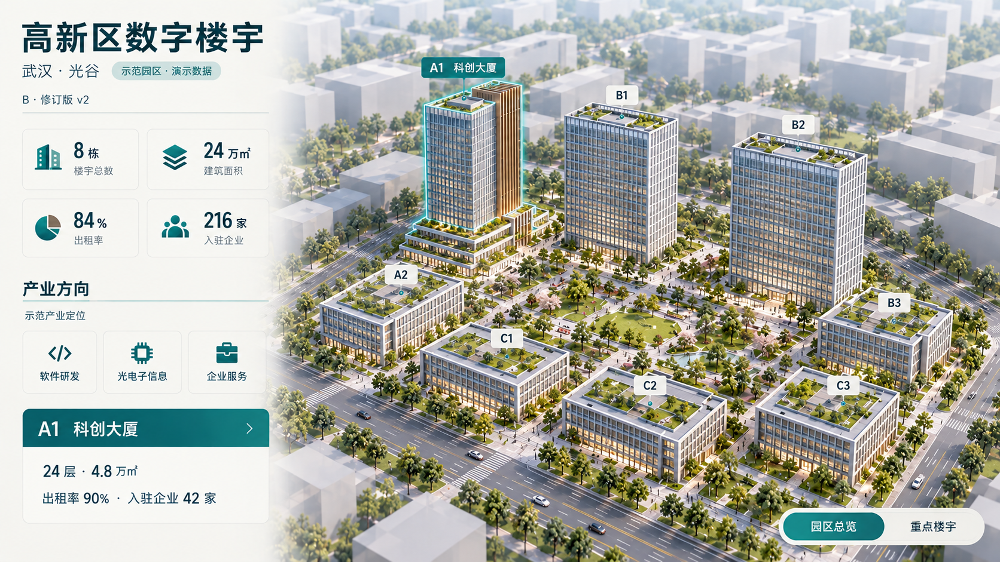
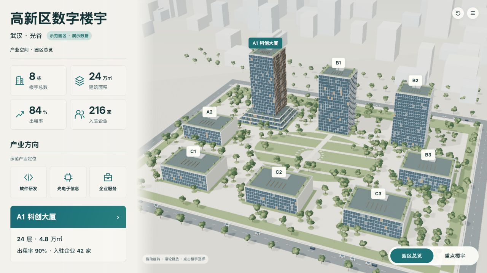
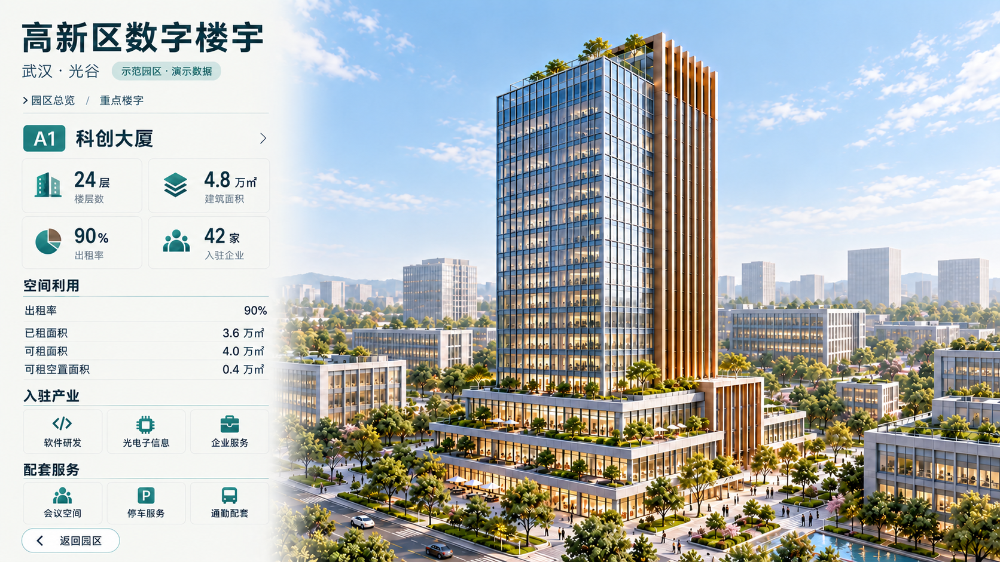
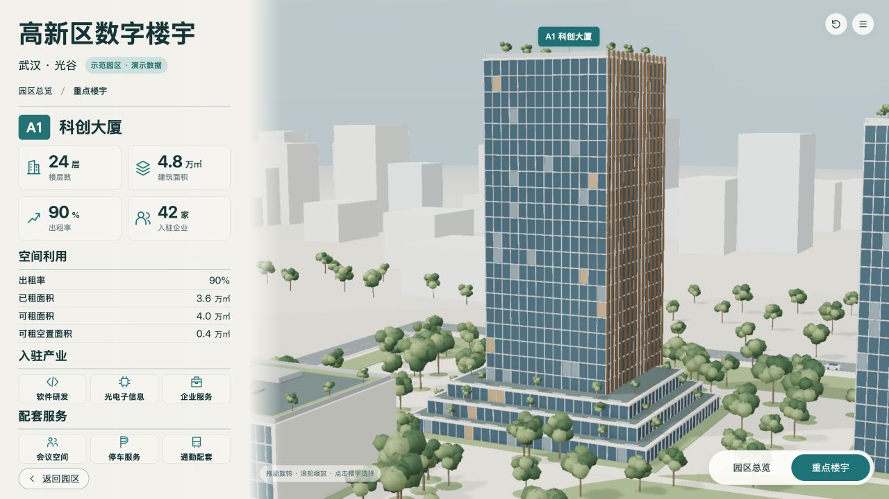

演示快照A1，园区与楼宇分别使用production-spec-v6-camera-sky.md中的固定相机；截图1280×720，设计画布1920×1080等比例缩放。
两图保留原始比例，AI图不具备测绘精度；对照不把AI不可数细节当作工程数据。浏览器截图是实际WebGL画面。




| ID | 预期 | 实际 | 原因假设 | 源修改 | 重建/复验证据 | 结果 | 后续 |
|---|---|---|---|---|---|---|---|
| V-02 | 低视点且塔楼/三级裙房完整 | 近景完整，角度较v4降低 | 先前眼点过高 | 调整相机眼点、目标和FOV | building-detailed-v4.jpg → building-detailed-v6.jpg | 构图修复，尚非像素一致 | 保持设计基准不改 |
| V-03 | 背景无AO几何伪影 | 灰色片区消失 | 移除天空GBuffer几何 | 程序化背景纹理 | building-detailed-v6.jpg | 已修复 | 复验旋转 |
| V-05 | 幕墙有反射与窗内层次 | 当前幕墙仍偏平色 | 无贴图、只有统一PBR颜色 | 后续加入固定输入幕墙材质，UV按真实窗格映射 | building-detailed-v6.jpg | 待纹理版 | v7重建并实看 |
| E-02 | AO后绘制调用≤350 | 361次，高于350预算 | 静态阴影在颜色和法线通道重复更新 | 按静态演示语义只在载入后更新阴影 | performance-v6.txt | 待复测 | 最终版重新读实际诊断 |
| I-01 | 其他楼宇身份卡不暗示进入该栋完整详情 | 已拆成不可点击身份标题与明确A1入口 | 整卡按钮曾隐含转到A1 | 源码拆分标题和操作 | binding-labels-v6.json | 已修复 | 最终版再走完整路径 |
[
{
"level": "campus",
"baseline": "design/concepts/B-campus-v2.png",
"baselineSha256": "b7256276a9357e0255ac1799e189de000f3c69563e0672624b826acfb76db264",
"actual": "checks/campus-detailed-v6.jpg",
"actualSha256": "2fa4e05f98dbabab63fd75f178b473d68a0734e82f66707d97c8b7fea463743a"
},
{
"level": "building",
"baseline": "design/concepts/B-building-v2r1.png",
"baselineSha256": "1aa5b6d94d1b17ae9b7eb815fa59fa75c1f0f44f88a9f2e41045d85aae8f43e4",
"actual": "checks/building-detailed-v6.jpg",
"actualSha256": "aa6bdabcba42e5c90e7ddf2e34aad78725d7a990af727e3f910841e42f44dc85"
}
]